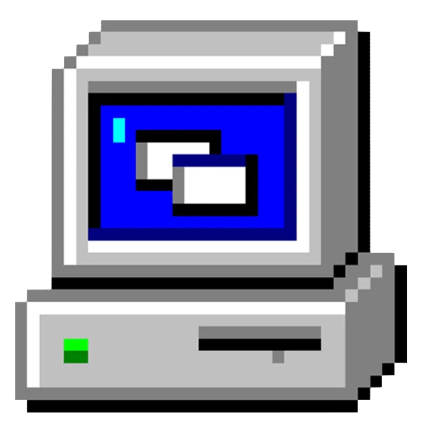
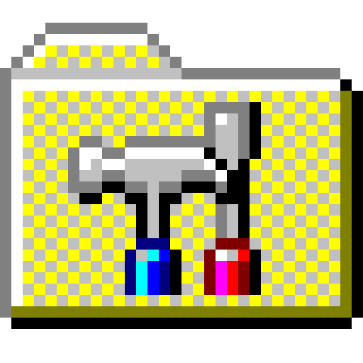
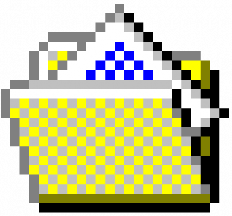
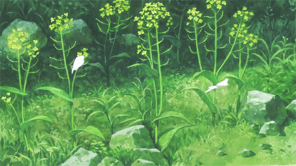
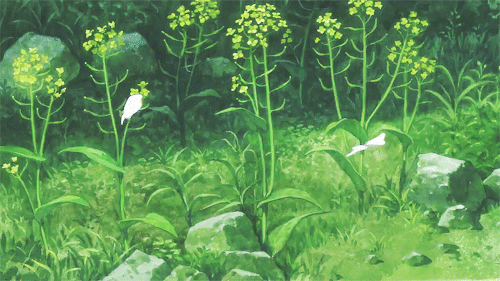
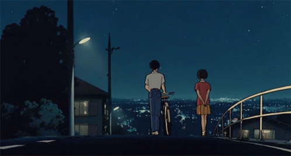
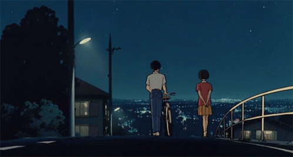

Player de Música

Meu Computador

Configurações

Sobre
Player de Música
Meu Computador
Configurações
Sobre
Player de Música
Meu Computador
Escolha o papel de parede
 

 

Configurações
Configure o som de clique e papéis de parede
Som de click:
Paralisar papéis de parede:
Sobre
Este Player de Música Retrô é um projeto pessoal de Davi Andrade
Tecnologias usadas: JavaScript, HTML e CSS
Inspirado pelo Retro Music Player de Ryan Costa
Acesse meu perfil no GitHub ou o repositório do meu projeto
Músicas
1. Wave - Tom Jobim
2. João e Maria - Chico Buarque
3. La Belle de Jour - Alceu Valença
4. Como eu quero - Kid Abelha
5. A Noite - Tiê
6. A Banda - Chico Buarque
7. Carolina, Carol Bela - Jorge Ben & Toquinho
Abra o Player de Música para tocar as músicas!